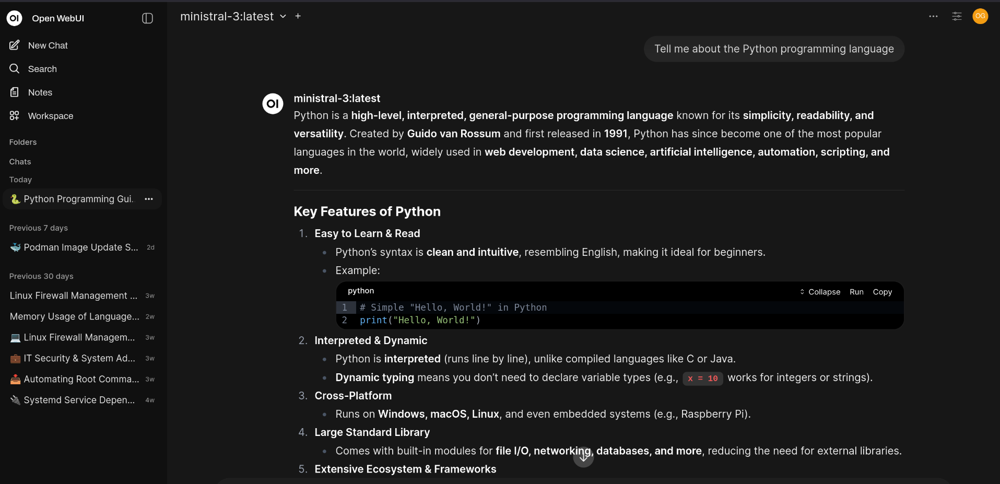
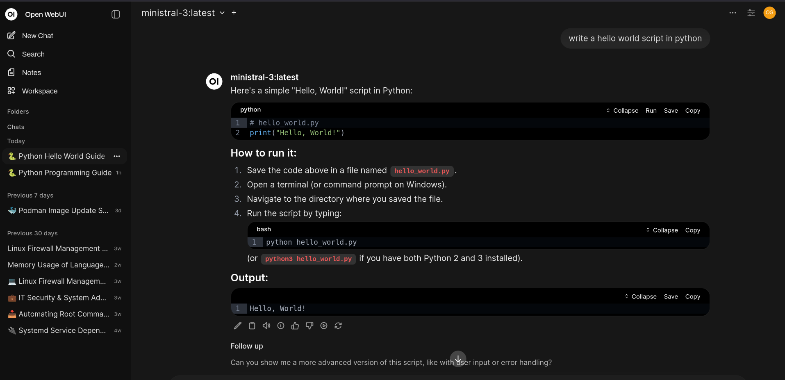
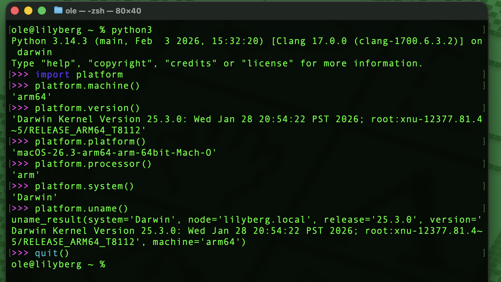
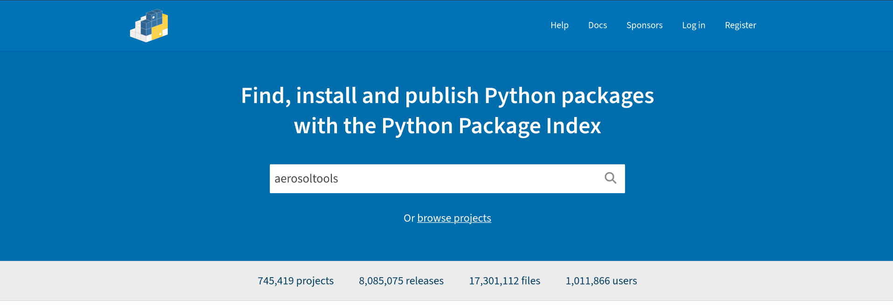
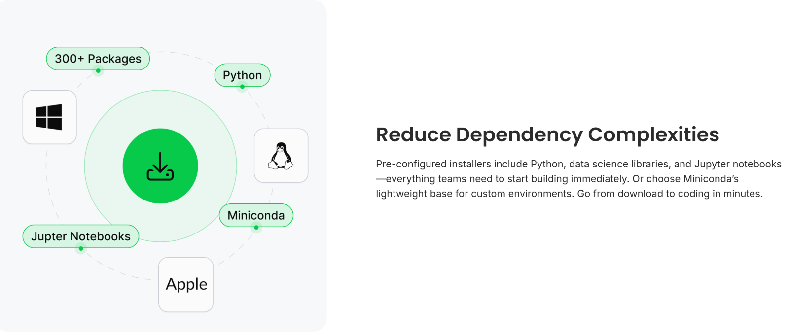
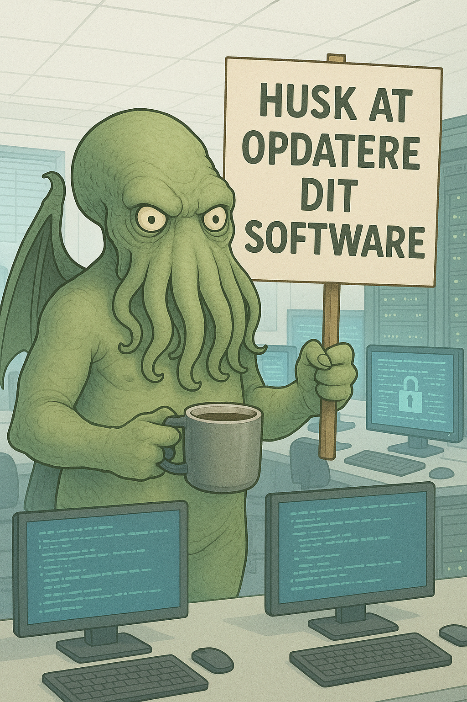
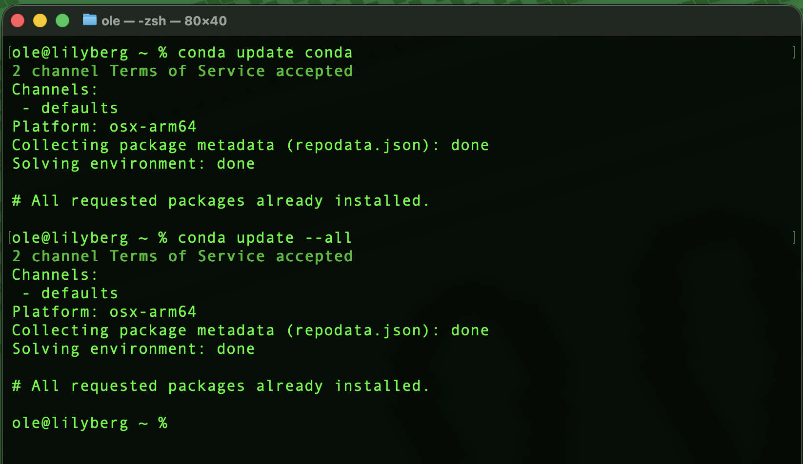
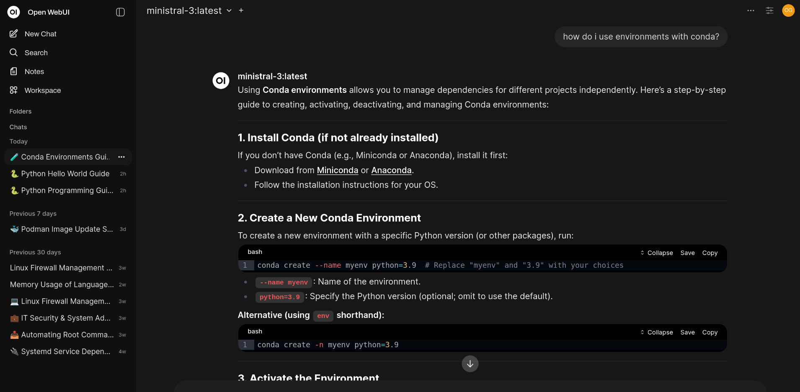

layout: true class: center, middle, front --- <hr class="rounded-orange"> # Anaconda ## A Python-platform for datascience <hr class="rounded-orange"> <img src="images/vibecoding.jpeg" style="float:right; width: 250px;border-radius: 10px;box-shadow: 0 5px 20px 0 rgb(0, 0, 0.2),0 5px 20px 0 rgba(143, 127, 136, 0.719);margin-top: 5px; margin-bottom: 5px;"> --- layout: false .left-column[ ## Python ] .right-column[ # What is Python <i class='fas fa-microchip'></i> <hr class="slim-orange"> Named after Monty Python!  [Vibe coding](https://en.wikipedia.org/wiki/Vibe_coding "Vibe coding") wtf.. ] --- .left-column[ ## Python ] .right-column[ # Python - OpenSource and community-driven <i class='fas fa-users'></i> <hr class="slim-orange"> - You can review the [code](https://www.python.org/downloads/source/) [(PSFL)](https://en.wikipedia.org/wiki/Python_Software_Foundation_License) - You can contribute to the [code](https://github.com/python/cpython/issues) - There are plenty online [ressources](https://www.python.org/doc/) - Used extensively for data science, machine learning (you know AI?!), web development, devops, automation and cybersecurity. ] --- .left-column[ ## Python ] .right-column[ # Python - Friendly <i class='fas fa-user-check'></i> <hr class="slim-orange"> - Clean and easy syntax - Dynamicly typed  ] --- .left-column[ ## Python ] .right-column[ # Python - Interpreted <i class='fas fa-code-branch'></i> <hr class="slim-orange"> - The interpreter runs your sourcecode (line-by-line) - The interpreter can be used from many tools, editors and [applications](https://support.microsoft.com/en-us/office/get-started-with-python-in-excel-a33fbcbe-065b-41d3-82cf-23d05397f53d). <img src="images/python-terminal-version.png" style="float:right; width: 500px;border-radius: 10px;box-shadow: 0 5px 20px 0 rgb(0, 0, 0.2),0 5px 20px 0 rgba(143, 127, 136, 0.719);margin-top: 5px; margin-bottom: 5px;"> ] --- .left-column[ ## Python ] .right-column[ # Python - Crossplatform <i class='fas fa-laptop-house'></i> <hr class="slim-orange"> - Write once ... run anywhere  ] --- .left-column[ ## Python ] .right-column[ # Python - Library <i class='fas fa-cogs'></i> <hr class="slim-orange"> - Large built-in library - Extensive ecosystem for additional interfaces  ] --- .left-column[ ## Python ## Anaconda ] .right-column[ # <i>Anaconda</i> <i class='fas fa-truck-loading'></i> <hr class="slim-orange"> - A distribution of tools for data science - Includes handling of python(s) and environments - Datascience libraries - Spyder - Jupyter Notebook - ... And much more  ] --- .left-column[ ## Python ## Anaconda ] .right-column[ # <i>Anaconda Navigator</i> <i class='fas fa-truck-loading'></i> <hr class="slim-orange"> <img src="images/anaconda-navigator.png" style="float:right; width: 500px;border-radius: 10px;box-shadow: 0 5px 20px 0 rgb(0, 0, 0.2),0 5px 20px 0 rgba(143, 127, 136, 0.719);margin-top: 5px; margin-bottom: 5px;"> ] --- .left-column[ ## Python ## Anaconda ## Tools ] .right-column[ # <i>Spyder</i> <i class='far fa-edit'></i> <hr class="slim-orange"> - <i>conda install spyder-kernels=3.1</i> for environment-support - Select the python-interpreter from AppData\Local\anaconda\envs <img src="images/spyder-interface.png" style="float:right; width: 500px;border-radius: 10px;box-shadow: 0 5px 20px 0 rgb(0, 0, 0.2),0 5px 20px 0 rgba(143, 127, 136, 0.719);margin-top: 5px; margin-bottom: 5px;"> ] --- .left-column[ ## Python ## Anaconda ## Tools ] .right-column[ # <i>Jupyter Notebook</i> <i class='far fa-edit'></i> <hr class="slim-orange"> - Web-based application - Create and share documents containing live code, equations, visualizations, and narrative text. - Used for data analysis, machine learning, and educational purposes. <img src="images/jupyter-notebook.png" style="float:right; width: 500px;border-radius: 10px;box-shadow: 0 5px 20px 0 rgb(0, 0, 0.2),0 5px 20px 0 rgba(143, 127, 136, 0.719);margin-top: 5px; margin-bottom: 5px;"> ] --- class: middle, front <hr class="rounded-orange"> # <i class='far fa-lightbulb'></i> Question # <i class='fas fa-microphone-alt'></i> Comments <hr class="rounded-orange"> --- class: center, middle, front <hr class="rounded-orange"> # Security and Governance ## How we handle the snakes at NFA <hr class="rounded-orange"> --- layout: false .left-column[ ## Python ## Anaconda ## Tools ## Security ] .right-column[ # Security - [Governance](https://intra.bm.dk/documents/9862) <i class='fas fa-file-contract'></i> <hr class="slim-orange"> - [Guidelines for use of Python/Anaconda](https://intra.bm.dk/documents/8223) - Talk to the Python-governance group ... - Get in the Teams-group (contact it-sikkerhed@nfa.dk) - Use Anaconda - Update your distribution when there are updates - Ask if you use packages (mind the whitelist) - Mind the policies and guidelines for processing data ] --- .left-column[ ## Python ## Anaconda ## Tools ## Security ] .right-column[ # Update!1 <i class='fa fa-check-square'></i> <hr class="slim-orange">  ] --- .left-column[ ## Python ## Anaconda ## Tools ## Security ] .right-column[ # Update Anaconda with <i>conda</i> <i class='fa fa-check-square'></i> <hr class="slim-orange">  ] --- .left-column[ ## Python ## Anaconda ## Tools ## Security ] .right-column[ # Environments - divide and conqueror <i class='fas fa-cube'></i> <hr class="slim-orange">  ] --- .left-column[ ## Python ## Anaconda ## Tools ## Security ] .right-column[ # Environments - example <i class='fas fa-cube'></i> <hr class="slim-orange"> Opret et Anaconda environment <i>conda create -n llm-workspace python=3.12</i> Aktiver det nye Anaconda environment <i>conda activate llm-workspace</i> Deaktivere Anaconda environment <i>conda deactivate</i> ### Andre kommandoer til at arbejde med Anaconda environments Se hvilke environments du har installeret. <i>conda env list</i> Slet et environment <i>conda remove llm-workspace</i> ] --- class: middle, front <hr class="rounded-orange"> # <i class='far fa-lightbulb'></i> Question # <i class='fas fa-microphone-alt'></i> Comments <hr class="rounded-orange">